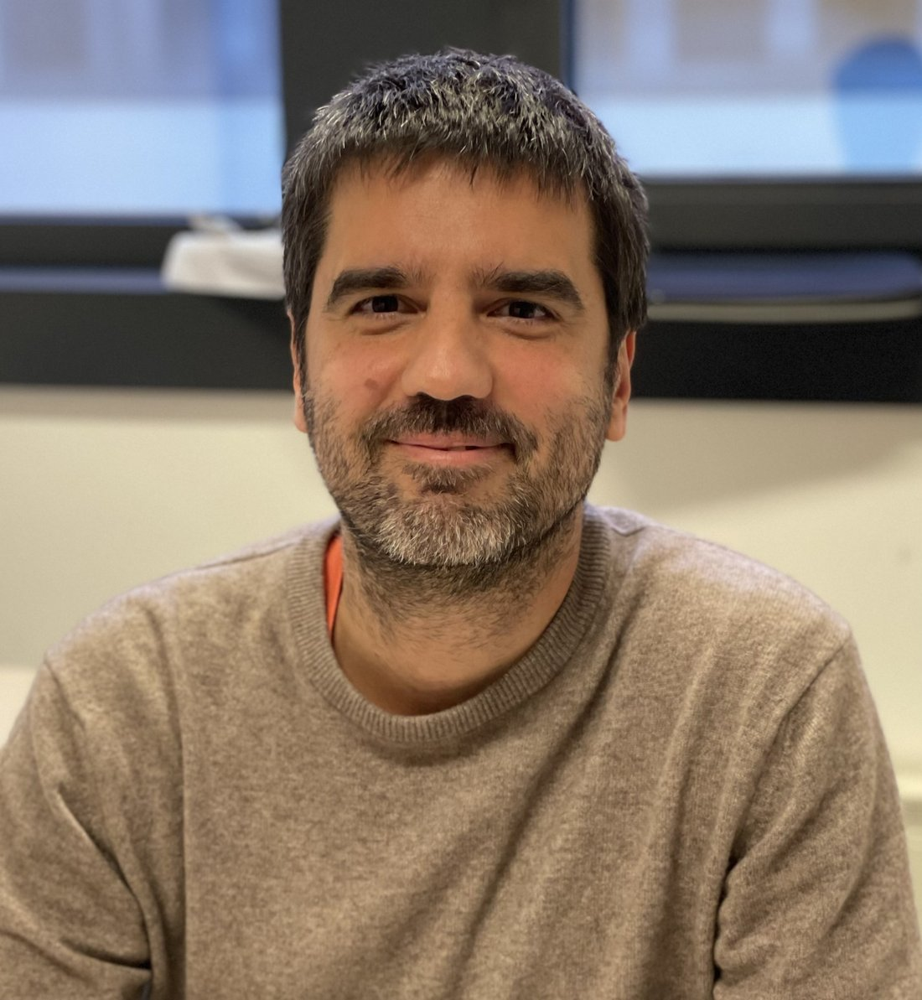

Mathematics · Analysis of PDEs
Federico
Cacciafesta.
Associate Professor of Mathematics
Department of Mathematics “Tullio Levi-Civita” · University of Padova

Areas of interest
Research interests.
Analysis ofDispersive PDEsconnections across equations, geometry and dynamics
𝒟Diracequations∿Dispersive
estimates∇PDEs on
manifoldsψNonlinear
dynamicsμInvariant
measuresℋHarmonic
analysis
Selected new work
Recent papers.
Recent preprints and publications; the complete archive can be searched by title, year and topic.
202620262026
Dispersive estimates for Dirac equations in Aharonov-Bohm magnetic fields: massive case
with P. D’Ancona, Z. Yin and J. Zhang · Preprint · arXiv:2611.07445
Global well-posedness and growth of Sobolev norms for nonlinear Dirac equations with Yukawa potential on compact manifolds
with S. Mundula · Preprint · arXiv:2607.03242
Dispersive estimates for Dirac equations in Aharonov-Bohm magnetic fields: massless case
with P. D’Ancona, Z. Yin and J. Zhang · Journal of Functional Analysis 290, 111267 (2026)
Get in touch
Questions, ideas,
collaborations.
Department of Mathematics, University of Padova · Italy